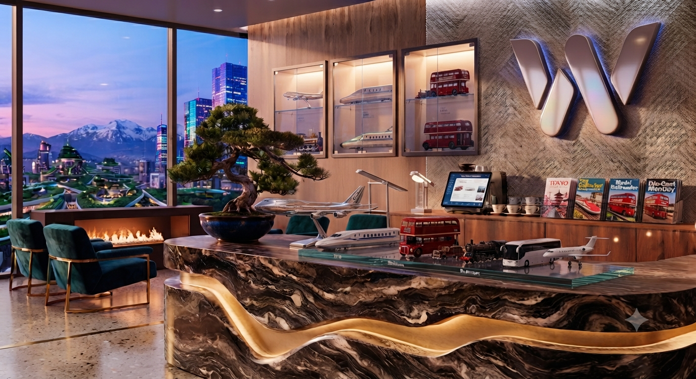

A little help
goes a long way.
Questions about a booking, ticket, or cancellation? Send us a note.

Tell us what's
on your mind.
Share a few details and we'll prepare an enquiry confirmation for you. This demo stores the message in your current browser only; it does not send an email.
Email supporthelp@wayora.example
Support hoursMonday–Saturday · 9 AM–6 PM
We're everywhereHelping make every journey simpler
Good to know.
Is this a real ticket booking service?
No. Wayora is a front-end demo. It does not connect to bus operators, railway systems, or airlines, and tickets are not valid for travel.
How does ticket cancellation work?
Use My bookings to cancel a confirmed demo booking. Estimated refund: 90% at least 5 days before departure, 70% 3–4 days before, 50% 1–2 days before, and 0% within 24 hours. No actual refund is issued.
Where is my booking history stored?
Bookings are saved in your browser's localStorage on this device. Clearing site data or changing devices may remove or hide them.
Does the map show live transport routes?
The Google Maps embed is a location preview. Live route and transport availability integrations require API credentials and a backend.